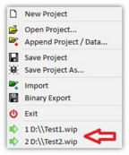
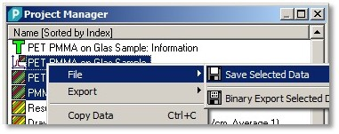

|
保存与加载
|
加载或追加项目
您可以通过主菜单"文件 > 加载项目"来加载项目。
请注意，当前打开的项目将被关闭，如果您在此之前没有保存项目，所有数据将丢失（之前可能会有一个对话框询问）。
如果您想将另一个项目中的所有数据添加到当前打开的项目中，可以使用主菜单"文件 > 追加项目"追加它。
加载最近使用的项目

您可以通过主菜单"文件"并在菜单底部选择一个文件来加载最近打开的项目文件。
请注意，硬盘上不再存在的文件将不会在此处显示。
保存项目
保存整个项目
您可以通过主菜单"文件 > 保存项目"（或"项目另存为..."）保存您的项目，将所有数据保存到硬盘或闪存驱动器上。所有数据将保存到一个 .wip 文件（WITec 项目文件）中。
保存项目时会保存什么？
不会被保存的内容：
保存或追加多个数据对象（非整个项目）

可以仅保存一个数据对象，甚至保存多个选定数据对象到 .wid 文件（WITec 数据文件）中。
此操作可通过在项目管理器中选择多个数据对象并打开上下文菜单"文件 > 保存选定数据"来执行。
可以通过主菜单"文件 > 追加数据"将之前保存的数据文件追加到当前项目。